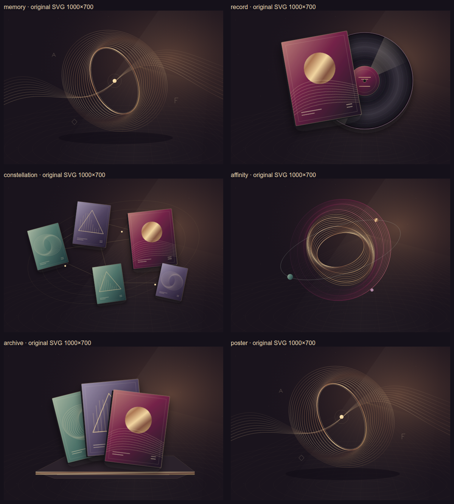

El viaje de una canción
Evidencia local del rediseño de Música Épica. La experiencia es una animación de capas SVG en el navegador. Estos vídeos son grabaciones de QA de su funcionamiento real, sin audio.
Documento de aceptación y comandos · Pruebas de movimiento y 36 vistas · Segundo plano y standalone · Tests, lint, build y SEO
Grabación de escritorio
Grabación móvil · 390×844
Autoplay: cuatro instantes, sin scroll


Arte original

Cada selector, su imagen
- El recuerdo · Ondas y destello
- La canción aparece · Portada y vinilo
- Un hallazgo lleva a otro · Constelación de portadas
- Lo que la música sugiere · Órbitas de afinidades
- Un lugar al que volver · Archivo de portadas


60 comprobaciones de imagen, copy y selector · Respaldo coherente si falla una imagen

Registro, login y flujos del producto
Recorridos completos con API sintética, sin cuentas reales: informe · Registro y validación · Búsqueda y recomendaciones · Playlist · Historial.


Error de desarrollo corregido
_jsxDEV is not a function impedía montar React y dejaba el prerender visible en #/login. Se aislaron las cachés y el cargador SSR.
Reproducción anterior · Runtime estable después de optimización/build · Login funcionando en localhost:3000 · Recorridos completos en desarrollo · Disponibilidad pública real de la API

Antes / después
Desktop anterior · Desktop final · Móvil anterior · Móvil final


Preferencias y respaldo
Pausa · Reduced motion · Sin JavaScript · Fallo de imagen · Ahorro de datos · Zoom CSS 200%


Inventario exacto · SHA-256 · Lighthouse final. Métricas de laboratorio, no CWV/INP de campo.